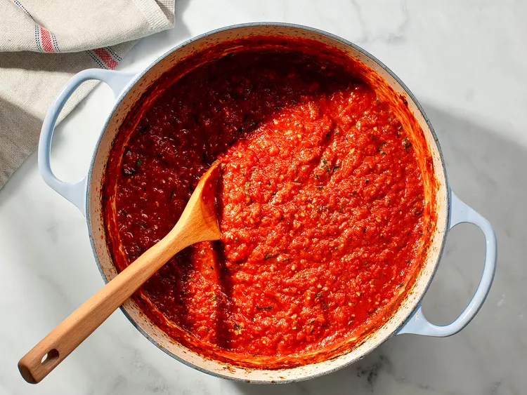

Tomato sauce

Description
This tomato sauce is a staple in my kitchen, covering everything from pasta to pizza
The quality of the ingredients really come out in this ultra forgiving recipe, give it a try and see!
Ingredients
- Plum tomatos
- Garlic
- White onions
- Olive oil
- Salt
- Pepper
- Mixed herbs
- Cut your tomatos into quarters
- Finely slice your white onions
- Chop garlic
- Add your chopped produce to a roasting tin
- Drizzle olive oil over the produce
- Add your slat, pepper, and mixed herbs
- With your hands, mix ingredients until everything is thoroughly coated
- Place in oven at 180C for 35 minutes, or until charred and fragrant
- Blend down roasted ingredients until smooth
- Serve on top of your favoruite pizza dough or pasta